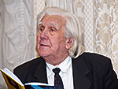
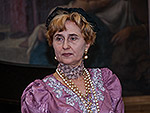
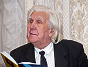
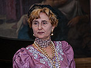

The NEWS 2012:
1. On December, 23rd, 2012 evening of the Pushkin club, devoted to the 50 anniversary of creation of National drama theatre (1963-2013) Honored artists of Georgia, the Honourable citizen of Nikolaev, the Honorary member of Pushkin club, Nikolay Alekseevicha Troyanov took place. By theatre stages from V.I.Nemirovich-Danchenko's drama « the Price of a life » have been shown. Cast: Danilo Demurin, a merchant-industrialist of 1-st guild - A. Markovich; Anna, his wife - A. Gracheva; Herman, his brother - P. Azarnikov; Claudia, his sister - T. Herman; Avdotiya Stepanovna - L. Janishevskaja; Nikolay, the student - A. Tsalapov; Varya - N. Kachurina; Alexander Morskoj - V. Golubtsov; Sasha, the servant - E. Tcherkasova. Production- of N. Troyanov, the Producer - of T. Herman; the painter - of A. Fedorov. Music underneath of evening - composer Ellina Obraztsova. N.A. Troyanov has read the verses from his the book "road Appiy's", and also again created. Our fellow countryman has participated in evening from Moscow the writer and playwright Michael Buznik. With videofilm of creative evening of N.A. Troyanov can familiarize on YouTube.
2. On December, 9th, 2012 off-schedule evening of the Pushkin club, devoted to creativity of composer Vladimir Ilich Gorbenko took place. At evening has acted ensemble "Melody". Cast of ensemble "Melody": Margaritas Koshik, Tatyana Nesterenko, Grigory Savchak, Svetlana Golovchenko and Luidmila Pashkovskaya. The ensemble sang songs on words of V. Kachurin, V. Panchenko, V. Karpuninoy and other Nikolaev poets. The concert was conducted by Tatyana Nesterenko. The Full video record of the evening can be found on YouTube.
3. On November, 25th, 2012 creative evening of the poet and translator Darinà Berezina took place. Evening was conducted the secretary of club by Natalia Nagornjak. Doc.Phil.Sci. Taras Kremin', the composer, the teacher of Children's musical school ¹2, Elina Obraztsova, and chairman of Pushkin club Anatoliy Zolotukhin have taken part in evening. Full videorecording of evening can be looked on YouTube., and videorecording of music underneath of evening from products Elina Obraztsova is placed HERE.
The response can be looked at evening on the Portal of the modern Ukrainian literature.
4. On October, 28th, 2012 « The Europe spoilt child Orfey », devoted to the 220 anniversary of composer Rossini took place literary-musicale evening. Evening was conducted a member of club by Svetlana Morgulis. In evening has taken part soloist vocal studios at the Teacher's club and Nina Zapadinskaja, Irina Ozimova. A number of musical illustrations was executed by students of the Nikolaev Higher musical school (director Sirota Anatoliy Arhipovich): Andrey Karatay, Maxim Ivanov, Anna Verlanova, Evgeniy Vas'kiv, Vladimir Porubaylo, Alexey Afanasiev, Evgeniy Dunduk and Dmitriy Smirnov. Svetlana Dmitrievna Degtyariova supervised over a concert of students, the deputy director on practical work. Full videorecording of evening can be looked on YouTube.
5. On September, 25th, 2012 opening 24-th season by general meeting of Pushkin club on which in structure of council of club it has been included composer Elina Obraztsova and the Program of work for 2012-2013 has been accepted. Then the evening, devoted to the 75 anniversary of the Nikolaev region and the 223 anniver-sary of city of Nikolaev - the leader a member of council club Elena Mihajlovna Farberova took place. Evening has opened a small concert of the composer, the teacher of Children's musical school ¹ 2, îf Elina Obraztsova. To her assisted the student of the Higher musical school, Alexandra Shara (vocal), and the teacher of Children's musical school ¹ 5, Sergey Ponamarev (saxophone). At evening publisher Irina Gudym and the employee of Regional scientific library îf Gmyriov, of Tatyana Serebryakova. Completely opening of a season look on YouTube.
6.In this year 10 years to cultural cooperation between Moscow and Nikolaev were executed. About the basic stages of this cooperation look on our site . Within the limits of this cooperation from July, 8 till July, 11th, 2012 in Nikolaev the delegation from Moscow under direction of director of " The House of Russian Abroad of a name of Alexander Solzhenitsyn », director of publishing house « Russian way », Victor Aleksandrovich Moskvin has visited. The structure of delegation included also the deputy director of a cabinet of the Ministry of Internal Affairs of France, chairman of the Russian sea assembly of Association of former officers of Russian imperial fleet, Alexander Borisovich Zhevakhov (Paris) and the writer, the winner of the premium by name of A.I. Solzhenitsyn, Alexey Nikolaevich Varlamov (Moscow). The Moscow delegation has brought in gift to the Central city library by name of Kropivnitskiy more than 300 books of publishing house « Russian way ». The delegation was accepted Nikolaev city a head by Vladimir Chajka, our fellow countryman the poet and playwright Michael Buznik organizational promoted contacts. On July, 9th visitors have attended the Nikolaev regional art museum by name V.V. Vereschagin, excursion was conducted the deputy director of a museum by Larissa Tveretinova. Director, the doctor of physical and mathematical sciences, Gennady Pinigin received in the oldest in Ukraine the Nikolaev astronomical Observatory visitors, excursion was conducted by the employee of the Observatory, Felix Bushuev. In the evening, for the first time attended our city, for A.Zhevakhov, his relative from Kiev, for Evgeniy, and for A.Varlamov excursion on city has been arranged. In excursion Irina Bondarenko has taken part as Deputies managing a department culture of the City. Visitors have visited in yachts-clubs, on a place of houses where lived V.I. Dahl and writer A.P.Zontag at whom happened À.Ñ. Pushkin, at a monument to the poet, on old Ingul river to the bridge and in Naval parkway. In the morning on July, 10th director of a museum of Shipbuilding and fleet Tatyana Mitkovskaja has lead excursion for visitors in a museum. Official ceremony of transfer of books for the Central city library by name of Kropivnitskiy (director T.V. Tverdaja) in the evening took place. In day of departure, on July, 11th, the Author of a site has transmitted visitors disks DVDR with records more than 300 photos, 5 videofilms about stay in Nikolaev, and was photographed for memory of a meeting with members of the Moscow delegation at A.S.Pushkin's memorial board. The full report on the act of transfer of books look HERE on YouTube.
7.On June, 15th, 2012 in Children's musical school 2 creative evening of the teacher of the supreme category, the musicologist and the composer, Elina Mykhaylovna Obraztsova, devoted to the 30 anniversary of creative and pedagogical activity took place. Evening was conducted the teacher of school by Irina Viktorovna Stavnichenko. Look full videofilm about this evening on YouTube.
8. On June, 6th, 2012, 213 years were executed by A.S.Pushkin. This event closed 23 season of work of the Nikolaev Pushkin club. In the morning in this case, chairman of club Anatoliy Zolotukhin has acted on Regional TV in direct to transfer - to look on YouTube. By tradition at 11 o'clock., members of club met at a memorial board to Pushkin where the artist has joined them, the winner of the State premium by name Ò.G. Shevchenko, Andrey Antonjuk. Then members of club at 12 o'clock have gathered at a monument to the poet where we were expected with "surprise". Somebody has tied the Russian flag on a neck to the poet and sat next on a bench, protecting own (?) "surprise", - the level of "culture" of the initiator spoke for itself. Members of club, having assigned flowers, have gathered in a corner of Pushkin square and have lead traditional readings at a monument to the poet with participation of bard Vitaly Panchenko. The detailed report on this event look on YouTube.
9. From June, 1 till June, 3rd, 2012 in Nikolaev took place 2-nd All-Ukrainian poetic festival "Waterline-2012". The Honorary member of Pushkin club, the editor-in-chief of the newspaper «Evening Nikolaev», the poet, the winner of several premiums, Vladimir Puchkov has acted as the organizer of festival (he also chairman of jury). Videofilm of creative evening of judges of competition which took place on June, 1st in a musical drawing room of the Regional art museum by name V.V. Vereschagin, it is possible to look on YouTube.
10. On May, 28th Michael Ozerniy has noted the 74 anniversary, and on May, 29th in the Regional art museum by name V.V.Vereschagin has opened an exhibition of his pictures. Interview to the artist before opening of an exhibition, excursion on an exhibition, lead by Lydia Odegova, and the act of opening of an exhibition look on YouTube.
11. On May, 27th, 2012 in a musical drawing room of the Art museum by name V.V.Vereschagin Pushkin club has held final session 23 seasons. Creative evening of a member of the union of artists of Ukraine, the winner of the State premium by name T.G. Shevchenko, of Michael Ozerniy, a member of advice of club, the scientific employee of a museum, Lydia Odegova conducted. Full videofilm about this event look HERE on YouTube. Music underneath of evening of teacher DMSh ¹ 2, the composer, îf Elina Obraztsova, look on YouTube.


12.
The presentation of the book «Gogol. Apostolic service of soul» of the Honorary member of Pushkin club, the professor, Tamara Konstantinovna Peresun'ko on April, 23rd, 2012 took place in scientific and pedagogical library. The book contains 336 p., consists of 28 chapters and 397 miniatures, is let out Irina Gudym's by publishing house in 2011. On presentation have acted publisher Irina Gudym, the author of a breadboard model of the book Anatoliy Zolotukhin, pupils of T.K. Peresun'ko: the doctor of pedagogical sciences, the professor, Vladimir Gladyshev, the teacher of university Leonid Dudjuk, Liliya Dombrovskaya and Lyudmila Goncharenko, which has read the letter from Israel one more schoolgirl - Roses Khazina-German. Professor Iliya Starikov has in summary acted.
The full videoreport on presentation look on YouTube.


13.
On April, 22nd, 2012 the session took place in Pushkin club, devoted to the 200 anniversary of war 1812. Session was conducted by Elena Farberova, Lydia Odegova, Olga Petrenko - in the fine arts and in music has told about reflection on war with Napoleon. In a final part of session managing a department of rare editions of Regional scientific library by name Gmyrev, Tatyana Serebryakova, has told about the rare editions, devoted to this event, and also about other interesting publications on this theme and about a modern estimation of those events.
The videoreport on session look HERE on YouTube.
14.
On March, 25th, 2012 the Pushkin club has noted the World day of poetry. Anatoliy Zolotukhin has told about the first poet of the Kiev Russ, sacred Eastern Orthodox church, Ilarion-Nikon Great (997-1088), named in «Slovo o polku Igorevi» the Bayan. In this to year to the author «Words about the Law and Good fortune» on March, 28th (on April, 10th) it is executed 1015 from the date of a birth.
Speech by A. Zolotukhin dedicated Hilarion look at YouTube.
Senior lecturer ÑhGU by name P. Mogila, Tatyana Kairova has acted with recitation in French. Together with her the student of a magistracy, the teacher-trainee of the French language, Morgan Peres, from Parisian university Sarbonna, and two our students Helen Kravchenko and Nastya Boginskaya have acted. With reading own the verses have acted: Jury Grosman, Arcady Surov, Darina Berezina, Michael Kovalevsky, Victor Panchenko, Eve Gean and her son Evgenie. Leonid Shifrin has acquainted listeners with the collection of verses «For limitless», blown up the Internet. In conclusion of session Ivan Gorenkov, has read through A.S.Pushkin's poem « Is not present, I do not value rebellious pleasure,.. ». Music underneath of session - composer Eliny Obraztsova and Sergey Filatov and Aleksandra Shara her pupils.
The videoreport on session look HERE on YouTube.
15. On February, 26th, 2012 the literary-musical concert of the teacher of the Higher musical school of Natalia Papushenko "Pages, to heart dear..." took place. The concert is devoted to the 120 anniversary of Children's musical school ¹ 1 name of N.A.Rimskiy-Korsakov. Opening address to a concert – the teacher of Children's musical school ¹1 of Valentina Trotsenko. Video of a concert look on YouTube in four parts.
16. On February, 10th, 2012 175 years from the date of Alexander Sergeevich Pushkin destruction were executed. In this case look on YouTube (channel PushkinClub) performance of chairman of club Anatoliy Zolotukhin on regional TV on February, 10th. Read also article «...Èñòèíà ñèëüíåå öàðÿ» by A. Zolotukhin, devoted to this anniversary.
17. On January, 22nd, 2012 session of Pushkin club has been devoted to personal creativity of members of club - leader E.M. Farberova. Session the Theatre has opened plastics and an image under direction of Ju.I. Zinchenko "Image". The tribute of memory to a member of council of club has been given and models of clothes and the water colors created by untimely left Olga Dudnikova are shown. Then members of club with execution of the verses, with the story about the published books have acted. On a photo we represent portraits of new members of club: Inna Kravtsova, Oleg Onisenko, Anastasiya Pastukhova and Irina Babich. Music underneath of evening - teacher DMSc ¹ 2, the composer, Elina Obraztsova. The detailed report on session can be seen HERE on YouTube.


18. For the Christening Dominical, on January, 19th, 2012, in the City showroom the display of paintings of the National artist of Ukraine, the winner of the State premium him has opened. T.G. Shevchenko of Andrey Danilovich Antonjuk, devoted memories his wife and to the 75 anniversary of our outstanding fellow countryman of Mykola Vingranovskiy. The reporting on opening an exhibition look on YouTube.